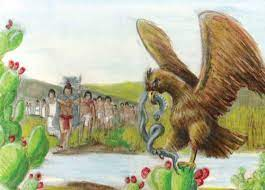

The Aztecs are a civilization that started around the late 1200's and started with a group of nomadic people who migrated to the Valley of Mexico.
According to legend, they say that they were searching for a sign from God and the came across an eagle holding a snake on a cactus which would
tell them where they would settle and eventually become Tenochtitlan

First things to visit on this trip is the center of it all...Tenochtitlan. Tetnochitlan was the center of the aztecs and was where all the trade would happen and where royalty lived.
Since the land that became Tenochtitlan was an island and had limited space the Aztec people needed more land to grow crops and live on so they created Chinampas. Chinampas are artificial
islands created to live and farm on that are connected to the ground via roots. These chinampas were very stable and were great sources to grow crops like corn, beans, squash, tomatoes,
peppers and many other crops.
The next thing to visit on Aztec land would be The Museo Del Templo Mayor. This is a museum based on the
original site of the Aztecs main temple. Inside this museum they have many things about their history and even some artifacts including weapons and clothes they wore. Their most popular weapon
being the Macahuitl.
Fun Facts:
The Aztecs practiced human sacrifice for the gods to bring them a good harvest,
strength and honor to the gods they prayed to. The amount of deaths at the hand of human sacrifice is unknown but the number is very high. Human sacrifice was seen as honor and people offered themselves but many of the people that died were prisoners, slaves or criminals.
‎
It is great to travel here on vacation for the views of the island and the many surrounding islands, experiences with history with a visit to the Museum and much more.
If you love seeing new things and learning about adaptation this is the place for you!
🏠Back To Home🏠